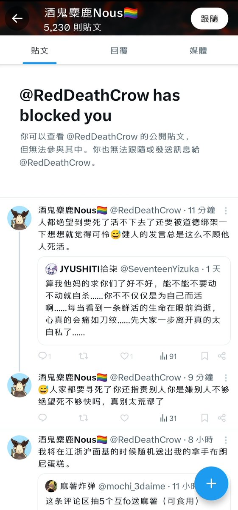

青石巷🍃🕊️
@qingshixiang258
@JyushitiYizuka @0721SenrenBanka 是滴是滴，健全b一定是一帆风顺的，事事顺心的，亲友和睦的，家庭美满的，学业有成的…

JYUSHITI拾柒
@JyushitiYizuka
忍不住了
是的，我是在道德绑架，我是不顾他人死活，我是健全b，我是在指责别人，这下你满意了吧😅面码老师离开了，你很高兴是吧😅
乌烟瘴气 https://t.co/H2WlZ5gHMQ